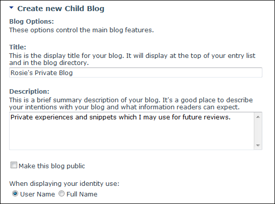
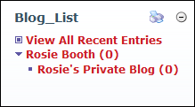

Creating a Child Blog
How to create a public or a private child blog using the New_Blog module. Note: A parent blog must first be created before a child blog can be added. Child blogs may be disabled and replaced with categories.
- Click the Blog Settings link on the New_Blog module - OR - Click the blog name on the Blog_List module and then select Edit Blog Settings from the View_Blog module actions menu. This opens the Edit Blog page.
- In the Child Blogs section (located at the base of this page), click the Add button. This displays the Create New Child Blog page.
- In the Blog Options section, complete these settings:
- In the Title text box, enter a title for the blog. This title is displayed in the Blog_List module.
- In the Description text box, enter a description of the content of your blog.
- Optional. At Make This Blog Public, select from these options:
- Mark
 the check box to make this blog viewable to all users who are authorized to view this module.
the check box to make this blog viewable to all users who are authorized to view this module. - Unmark
 the check box to set this blog as private. Private blogs can only be viewed by the blog owner. I.e. They cannot be viewed by any other user including Page Editors and Administrators.
the check box to set this blog as private. Private blogs can only be viewed by the blog owner. I.e. They cannot be viewed by any other user including Page Editors and Administrators.
-
Click the Update button.This returns you to the Edit Blog where the child blog is now listed in the Child Blogs list.
- Click the Cancel button to return to the module.
- Optional. Click on the name of the parent blog on the Blog_List module to view the child blog.

Adding a blog. This blog is set as public.

The child blog
-
See "Creating a Parent Blog - Create My Blog"
-
See "Configuring Advanced Settings for the Blog Module"